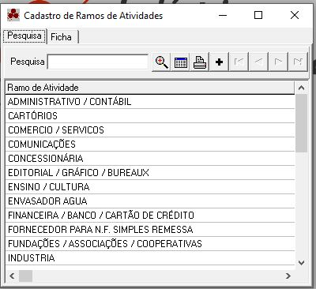
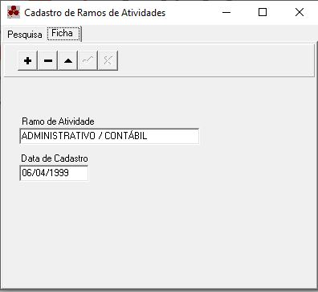

Ramos de Atividades
O Cadastro de Ramos de Atividade tem por finalidade armazenar os diversos Ramos de Atividades existentes no mercado, facilitando a classificação de cada cliente. Estas informações estão distribuidas em um tela no formato de páginas, onde cada página traz um tipo especifico de informação.
Dica:
Pesquisa Ramo de Atividades
Esta página tem por finalidade pesquisar os Ramos de Atividades cadastrados, apresentando-as em ordem alfabética.

Dica:

Ficha do Ramo de Atividade
Apresenta os dados referentes ao Ramo de Atividade selecionado na página de pesquisa e permite ao usuário:
- Cadastrar um novo Ramo de Atividade
- Alterar um Ramo já cadastrado
- Excluir o cadastro de um Ramo de Atividade

Dica:
- Para saber mais sobre um campo, click com o mouse sobre ele.